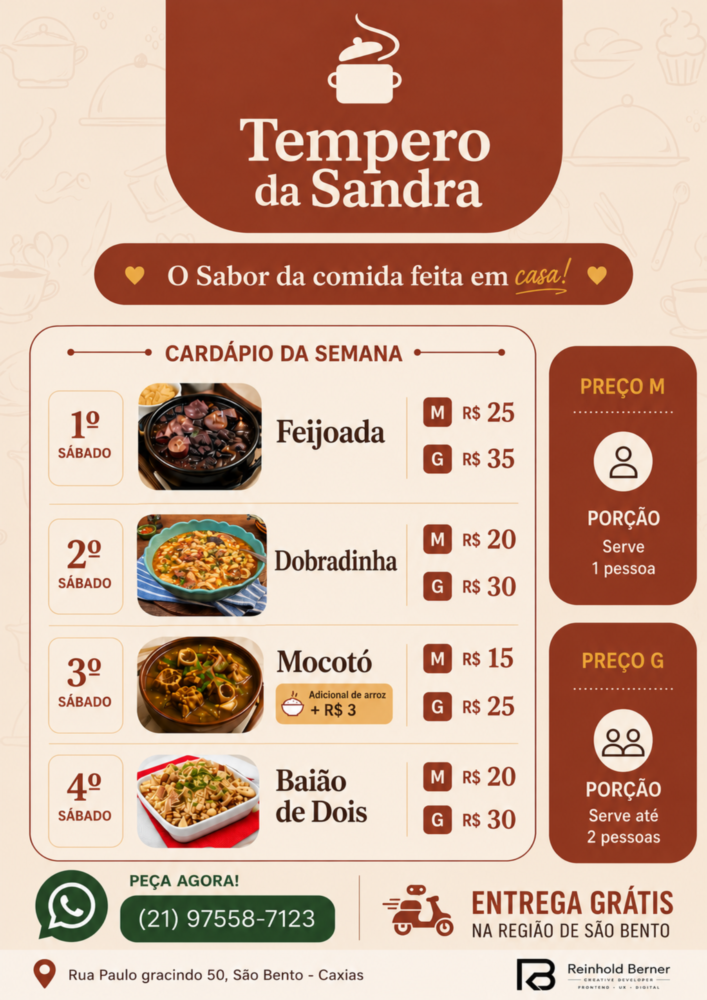

Produção audiovisual
Apoio no planejamento e na organização de materiais audiovisuais, pensando em narrativa, ritmo, formato, objetivo da peça e clareza da entrega.
produção criativa / audiovisual / digital
Atuo na criação, organização e desenvolvimento de projetos multimídia, conectando frontend, comunicação, audiovisual, games e inteligência artificial aplicada à criação.

sobre
Atuo na interseção entre produção audiovisual, experiências digitais, comunicação e conteúdo multimídia. Minha prática reúne organização de projetos, documentação, criação de materiais, apoio a eventos, desenvolvimento frontend e uso de inteligência artificial para acelerar processos criativos com mais clareza e consistência.
Trabalho bem na ponte entre ideia e execução: estruturar etapas, alinhar prioridades, organizar materiais, acompanhar entregas e transformar conceitos em peças, interfaces e experiências que precisam funcionar tanto criativamente quanto tecnicamente.
frentes de atuação
Minha atuação combina organização, linguagem digital, sensibilidade criativa e atenção à experiência do usuário para apoiar projetos do planejamento à entrega final.
Apoio no planejamento e na organização de materiais audiovisuais, pensando em narrativa, ritmo, formato, objetivo da peça e clareza da entrega.
Criação e estruturação de conteúdos para plataformas digitais, com atenção à linguagem da internet, consistência visual, calendário, público e adaptação de formatos.
Documentação, divisão de etapas, acompanhamento de tarefas e suporte para que ideias criativas saiam do conceito e avancem para entregas concretas.
Apoio na construção de mensagens, presença digital e materiais de comunicação, conectando conteúdo, público, tom de voz e objetivo do projeto.
Uso de ferramentas de inteligência artificial como apoio para pesquisa, ideação, organização de referências, otimização de processos e desenvolvimento de materiais criativos.
Base em design de games para pensar narrativa, interação, experiência do usuário, documentação e construção de projetos digitais com lógica e propósito.
experiências
Contextos que fortaleceram minha atuação em organização, comunicação, acompanhamento de equipes e construção de projetos com ritmo de entrega.
2Doods
Projeto autoral de produção digital e experimentação multimídia, com atuação em conteúdo, roteiro, planejamento editorial, organização de processos e desenvolvimento de materiais para mídias digitais. É um espaço em que conecto linguagem de internet, direção criativa e consistência de execução em projetos com identidade própria.
Frontend / UX
Projeto pessoal desenvolvido para consolidar minha atuação em frontend, UX e experiências digitais. O site reúne projetos web, interfaces responsivas, organização visual e aplicações interativas, funcionando também como demonstração prática da minha evolução técnica em HTML, CSS, JavaScript e design de interface.
Game Jam ECDD 2023
Atuação em suporte logístico, operacional e de comunicação com participantes em um ambiente criativo de prazo curto. A experiência fortaleceu minha capacidade de organização, acompanhamento de equipes, leitura de contexto e resposta rápida para manter a operação e a experiência do evento funcionando com fluidez.
Santander Open Academy
Apoio à organização de atividades, comunicação com participantes e acompanhamento de rotinas ligadas a programas educacionais. Somada à formação complementar em comunicação, inteligência artificial e produção, essa vivência ampliou meu repertório para projetos digitais com foco em clareza, aprendizagem e desenvolvimento profissional.
cases criativos
Um case profissional desenvolvido para uma cliente real, combinando branding, experiência comercial e frontend responsivo para transformar presença digital em ferramenta de venda.
case profissional
Branding + Flyer + Cardápio Digital + UX Comercial
Projeto desenvolvido para uma cliente real do segmento de alimentação caseira em São Bento, Caxias.
A proposta foi criar uma identidade visual acolhedora e funcional, combinando branding artesanal, cardápio semanal e um site responsivo integrado ao WhatsApp para automatizar pedidos.
O projeto envolveu criação de identidade visual, desenvolvimento da logo, definição de paleta de cores, estruturação do flyer semanal, UX focado em facilidade de pedido, desenvolvimento do site responsivo, integração com WhatsApp e uma lógica automática para identificar o prato do próximo sábado.
mockup do flyer

Branding
A identidade visual foi pensada para transmitir comida caseira, acolhimento, simplicidade, sabor brasileiro e proximidade familiar. A paleta utiliza tons creme, terracota e dourado suave para gerar conforto visual e apetite.
Flyer
O flyer semanal foi estruturado para facilitar leitura rápida, destacar o prato da semana, organizar preços de forma intuitiva e funcionar bem tanto no WhatsApp quanto no Instagram.
Site
O site foi desenvolvido para simplificar pedidos, automatizar o contato via WhatsApp, identificar automaticamente o próximo sábado do mês, destacar o prato vigente e facilitar a navegação no mobile.
Resultado do projeto
A cliente recebeu o projeto com entusiasmo e aprovação imediata, validando tanto a identidade visual quanto a praticidade do sistema digital criado para os pedidos semanais.
Espaço de escrita, análise e reflexão sobre cultura, mídia, jogos e audiovisual.
Ler publicaçõesportfólio geral
Para ver também minha frente em web, UX, design e experiências digitais, o portfólio geral reúne projetos complementares à minha atuação em produção.
Abrir portfólio geralcurrículos
Currículo Produção / Audiovisual
Versão focada em produção multimídia, audiovisual, comunicação digital, eventos e projetos criativos.
Abrir / baixar currículoCurrículo Dev / Frontend
Versão focada em frontend, UX, experiências digitais e projetos web.
Baixar currículo devCurrículo Generalista
Versão mais generalista do currículo.
Abrir / baixar currículocursos & certificações
idiomas & competências
contato
Disponível para oportunidades de estágio, freelas, colaboração criativa e projetos em que organização, conteúdo, audiovisual e construção digital precisem caminhar juntos.